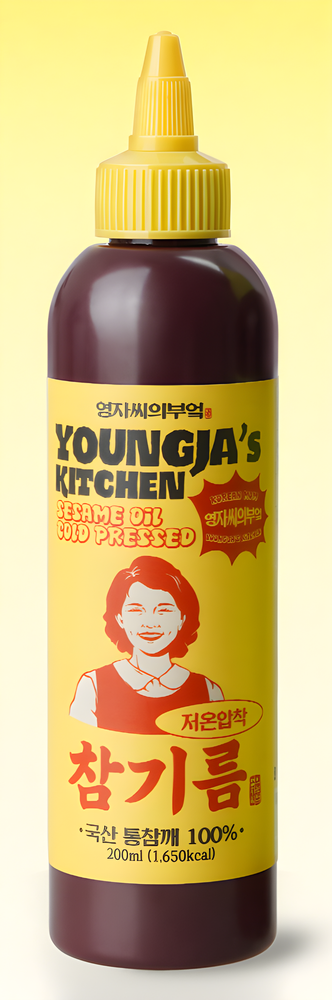

01기존 예시 / 새 비교 미제작
영자씨의부엌 · 스퀴즈 참기름
저온압착 국산 스퀴즈 참기름 200ml · 기존 최종판을 구성 예시로 사용합니다.
제품 홈페이지홀센피그 · 제품 상세페이지
A · 우리 방식
기존 영상 예시제품의 장점·특이점을 극대화하는 몰입형 연출
기존 시댄스 2.5 · 약 15초 · 480p 일반 생성(Draft 아님)
오더 · 실제 프롬프트 · 사용 사진
수집한 제품정보와 광고 방향
판매페이지 표기 · 국산 통참깨 100%, 저온압착, 200ml
제품 포인트 · 짜서 사용하는 노즐과 음식 표면의 먹음직스러운 윤기
연출 방향 · 숟가락에 함께 접히는 재료의 크기·깊이·움직임을 극대화
수집 원본과 실제 사용한 사진




아스트라에 전달한 오더 원문
시댄스 2.5, 15초 영상, 480p, 9대16 기준. 현재는 기획 검토만, 영상 발주 0회. 영자씨의부엌 저온압착 국산 스퀴즈 참기름 200ml, 15초 CF(실사) — 아이보리 셔츠·올리브색 앞치마를 입은 기존 성인 여성이 햇빛 드는 집 주방의 원목 식탁에서 비빔밥에 참기름을 짜 넣고 숟가락으로 비빈다. 제품 포인트: 밥알과 채소를 감싸는 참기름의 먹음직스러운 윤기와 고소한 이미지. 제품이 만드는 변화: 가느다란 참기름이 닿은 밥·채소·고추장을 숟가락이 바닥부터 들어 올리고 접는다. 그 같은 재료가 함께 섞일수록 표면의 윤기가 빛나고 고르게 비벼진 음식으로 바뀐다. 훅과의 연결: 숟가락이 퍼올리는 같은 재료의 움직임을 비현실적인 크기와 깊이로 극대화한다. 관객이 윤기 나는 밥알·채소 사이에서 함께 휘말려 비벼지는 듯한 몰입감을 느끼되, 숟가락이 재료를 들어 올리고 접는 행동이 그 안에서도 읽혀야 한다. 훅 이름: 참기름이 감싼 재료와 함께 비벼지는 순간. 평범한 조리 접사를 넘어, 재료가 눈앞과 뒤를 가득 채우며 교차하고 접히는 역동적인 절정을 만든다. 참기름은 그 재료 표면의 윤기로 보이고, 따로 떠도는 기름 회오리나 이미 완성된 음식 통로 구경으로 대체하지 않는다. 반응: 완성된 비빔밥을 먼저 먹음직스럽게 보여준 뒤, 여성이 바로 그 음식이 담긴 한 숟가락을 떠 먹고 음미한다. 마무리: 같은 그릇의 잘 비벼진 비빔밥과 같은 제품 병이 함께 남는다. 광고 문법: 참기름이 재료에 닿음 → 같은 재료를 함께 비비는 몰입형 절정 → 완성 음식의 윤기와 질감 → 한입·만족 → 제품과 음식. 제품명: 저온압착 국산 스퀴즈 참기름 200ml. 브랜드: 영자씨의부엌. 톤: 밝고 따뜻한 실사 푸드 광고, 실제 음식 질감 속 비현실적으로 강한 운동감과 깊이. BGM 필수. 시트: 기존 제품 → 인물 → 장소 순서. 제품의 갈색 병·노란 목·가늘어지는 원래 노즐·라벨·비율을 유지한다. 사용 준비 상태로 등장하고 개봉 동작은 생략한다. 기존 주방 사진의 흰밥은 위 오더의 비빔밥으로 표현한다. 새 광고 카피·자막은 후반 합성하며 실제 향·맛·효능이 검증됐다는 문구는 만들지 않는다. 아스트라 연출 설계 요청: 위 오더의 제품 포인트·핵심 행동·변화·반응·마무리를 유지하면서 장면 구성, 카메라, 전환과 리듬을 설계하고 이유를 짧게 설명한다. 공통 컷 수나 초 배분은 고정하지 않는다. 제품 사용과 변화가 같은 행동으로 이어지도록 설계한다. 영상에서 확인할 핵심 판단 기준 3개와 제품 외형 보존 기준을 각각 관찰 가능한 통과·실패 조건으로 작성한다. 미리 성공했다고 평가하지 않는다. 결과는 연출안·설계 이유·최종 모델용 프롬프트 초안·판단 기준으로 구분한다. 현재는 기획 검토만 하며 이미지·영상 생성, 업로드, 유료 실행과 발주는 하지 않는다. 실제 제작은 Dan의 별도 승인 뒤에만 진행한다.
시댄스에 실제 제출한 프롬프트
Seedance 2.5, 15초, 480p, 세로 9:16. 영자씨의부엌 저온압착 국산 스퀴즈 참기름 200ml의 밝고 따뜻한 실사 CF. 참기름이 닿은 같은 재료를 숟가락으로 들어 올리고 접는 실제 혼합을 비현실적인 크기와 깊이로 확장한다. 관객이 음식과 함께 비벼지는 순간이 광고의 중심이다. 참고 이미지 순서는 제품→인물→장소. 같은 성인 여성의 갈색 낮은 번 머리, 아이보리 셔츠와 올리브 앞치마를 유지한다. 같은 왼쪽 창과 밝은 주방, 원목 식탁, 크림색 그릇을 사용하며 장소 사진의 흰밥을 밥·채소·고추장이 있는 비빔밥으로 표현한다. 시트의 분할 구성이나 제품 배경 HACCP 마크는 화면 디자인으로 옮기지 않는다. 사용 준비된 원제품의 노즐에서 가느다란 참기름이 재료에 닿는다. 노즐과 닿는 재료가 읽히는 가까운 사선 시점으로 짧게 시작한다. 여성의 숟가락이 바로 그 재료 아래 흰밥까지 들어가 퍼올린다. 이 동작을 연결해 시점이 숟가락 위 재료 사이로 낮아지고 크기와 깊이가 압도적으로 커진다. 혼합에 가장 긴 호흡을 준다. 숟가락 가장자리가 밥·채소를 들어 올리고 안쪽으로 기울여 접는 힘을 볼 수 있게 한다. 거대한 가까운 재료층이 시야를 비스듬히 가로질러 덮고 뒤의 재료와 맞닿는다. 카메라도 그 접힘에 짧게 밀려 움직인다. 재료가 다시 열릴 때 같은 밥알에 고추장이 더 고르게 묻은 모습이 드러난다. 전경과 뒤층이 교차하고 접히는 변화로 관객이 혼합 속에 놓인 듯한 운동감을 만든다. 참기름은 그 밥알과 채소에 붙은 얇고 먹음직스러운 윤기로 빛난다. 주요 퍼올림과 접힘은 숟가락의 접촉에 연결한다. 이미 완성된 음식 터널을 통과하는 비행, 일정한 원통형 회전, 독립된 기름 나선이나 유리 덩어리, 저절로 완성되는 음식은 만들지 않는다. 마지막 접힌 재료가 같은 그릇으로 내려앉는 동작을 따라 현실 크기로 돌아온다. 움직임을 가라앉히고 완성된 비빔밥을 먼저 알아볼 수 있게 보여준다. 고추장이 고르게 어우러진 밥알, 형태가 살아 있는 채소, 표면의 참기름 윤기가 읽힌다. 그 뒤 여성이 바로 그 그릇에서 음식이 담긴 한 숟가락을 떠 입에 넣고 음미하며 자연스럽게 미소 짓는다. 실제 한입을 보여준다. 마지막 화면에 잘 비벼진 같은 그릇과 같은 제품 병을 함께 남긴다. 음식 상태를 비비기 전으로 되돌리지 않는다. 제품은 사진에서 보이는 짙은 갈색의 가늘고 긴 병, 넓은 세로 홈 노란 원통형 목, 위로 더 좁고 높게 가늘어지는 세로 홈 노즐과 짧게 좁아지는 끝을 사용부터 마지막까지 유지한다. 정면 노란 라벨, 붉은 초상, 기존 글자와 비율을 보존한다. 개봉 동작은 생략한다. 플립캡·힌지·새 부품을 추가하지 않는다. 정면에서 확인된 표면 위주로 보여주고 병을 뒤로 돌려 미확인 인쇄나 구조를 드러내지 않는다. 15초 안에서 짧은 사용 도입→가장 긴 몰입형 혼합→완성 음식을 읽는 여유→한입과 안정된 마무리의 리듬을 만든다. 별도 인물·사건·공간을 추가하지 않는다. 전체에 독창적인 BGM을 두고 혼합의 운동감을 받친 뒤 음식 확인과 만족에서 부드럽게 가라앉힌다. 새 광고 카피·자막은 넣지 않는다. 실제 향·맛·효능이 검증됐다는 문구를 만들지 않는다.
B · 릴스 방식
새 Draft 미제작카메라에 말하는 인물 · 제품 소개와 짧은 반응
릴스 방식 결과가 들어갑니다아직 제작하지 않았습니다
예정 설정 · 시댄스 2.5 / 15초 / 480p Draft / 소리 포함
오더 · 실제 프롬프트 · 사용 사진
문제 제기 → 제품 소개·보여주기 → 짧은 반응을 담는 릴스 방식입니다. 실제 대사와 프롬프트는 아직 작성하지 않았습니다.
오더 · 실제 프롬프트 · 수집 원본 · 2K 보완본 · 실제 사용 사진
제작 후 실제 자료로 채웁니다.